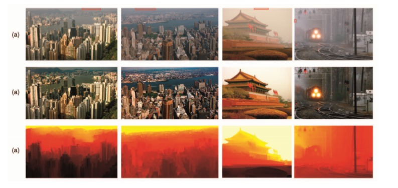

Image De-hazing and Fog removal
Images that are captured in bad weather such as haze and fog are not clearly expressed and hence not so comprehensible. Such images are reduced in quality to a great degree due to the scattering of atmosphere that in turn reduces contrast and visibility. Fog leads to whiteness in the image as well as low contrast. Haze is an atmospheric occurrence which fades the clearness and precision of image because of dust or smoke which are minute portions of matter. It affects not only the visibility but also complicates post processing of image and implementation of numerous Computer Vision Algorithms.
In this project, I have presented an efficient and productive fog elimination approach when an image is taken in as input. On the basis of estimated transmission or depth map, this procedure re-establishes the hazy or foggy image. I have used a Dark Channel Prior and Color Attenuation Prior approach which is beneficial for clearing the degraded image. I have eliminated haze from unclear images so that the characteristics and attributes of images are improved. The acquired result is a haze free and fog free image by these techniques. The implementation and design are done with the help of python.